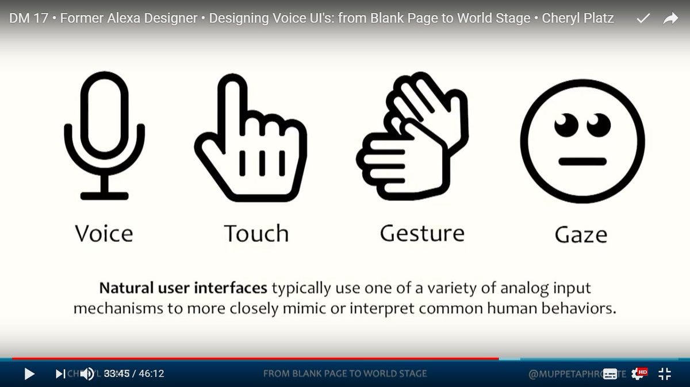
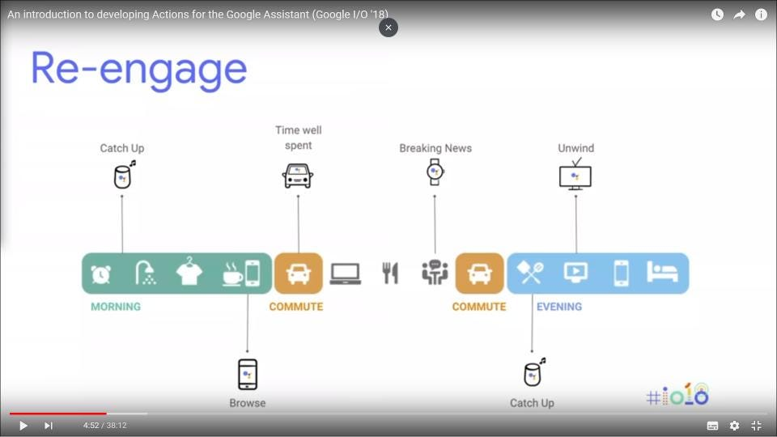
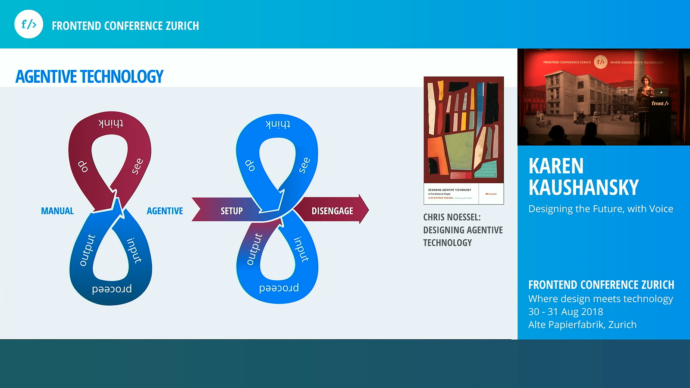

Conversational apps naming dilemma
A terminology survey for (voicefirst) bot makers
7.10.2018 — added a note about X.ai
Recently I started my new job as researcher at ITD-CNR, the Institute of Educational Technology, part of the Italian National Research Council. The goal of research team to which I belong is to realize chatbots/voice assistant applications in order to support Italian language teachers that teach Italian to immigrants (both children and adults). Challenging!
We are mainly focused on voicefirst multimodal conversational apps usingsmartspeakers and smartphones and we are now experimenting the possibilities of Google Assistant (nowadays Actions On Google is the only framework that support Italian language on a smartspeaker). As soon as possible we’ll probably use other voice metabots (Amazon Alexa and Microsoft Cortana).
But I have naming issues.
At CNR the other researchers call me and my colleagues “ chatbottisti”. Ugly term I think, that could be translated from Italian to English as chatbotters. Terrible, isn’t it?
Seriously, in general I dislike the term chatbot to generally refer to a conversational application. Let me explain why here below.
From my point of view, and basing on my knowledge, a chatbot is technically something very specific: it’s a conversational app running through an instant messaging platform, as Facebook Messenger, Telegram Messenger, Whatsapp, Slack, Facebook workplace, etc.
A chatbot get written user utterances and reply text-based sentences (and GUI widgets) through chat messages.
Again, the term chatbot sounds to me wrong for a conversational app conceived for a voice assistant hub as Google Assistant or Amazon Alexa. Maybe voicebot is a better name here? A proper definition could be:
A voicebot is a conversational app conceived to run on a smartspeaker: getting spoken language user sentences and replying spoken language (and sounds).
To be honest I’m not yet satisfied with the above definition. I feel that voicebot is a too partial and temporary way to define by example an Amazon Alexa skill or a Google Assistant Action.
Digression:
Google, Amazon and Microsoft all implement their assistants in “centralized” web architecture. Google call action an application made by a third party developer that implement any specific functionality “called by” Google Assistant.
Interesting, the name action imply the Google vision of an ecosystem of Assistant apps that fulfill any kind of tasks (following the “get things done” mantra).
Whereas Amazon call skill third party applications that integrate and extend Alexa core features. Is not by chance that Alexa skills inherit the Alexa voice. It’s always Alexa that chat with users, even if the application is made by third parties.
Anyway, for me is clear that an application built for Alexa or Google Assistant is mainly voicefirst (based on a voice as primary media) but also multimodal by design. Both systems let developers to conceive an application to use multiple device media capabilities: beside the voice, for example, the screen and the touch.
In the long term we’ll certainly see the integration of other sources in human-computer interaction: gesture/gaze detection, emotion detection, etc., as Cheryl Platz stated in her beautiful talk at #designmatters17 conference:

Paul Cutsinger, Alexa US Chief Evangelist, has recently introduced the Alexa Presentation Language. Is obvious now that Alexa skills will not be just voice-bots, but “universal” conversational application embracing a vast variety of input and output modes and a vast variety of devices.
An Alexa skill run now on a voice-only smartspeaker (Amazon Echo device), a voice+screen smartspeaker (as the Amazon Echo Show), a smart TV, inside a car with a dedicated device, etc. Amazon call all these things ambient computing.
Google Assistant’s minds follow a very similar path, maybe more focused on the analysis of the day-to-day human user experience cross devices.
If I’m not wrong, Google call ubiquitous computing the Google Assistant experience where a person interact with the Assistant (and the Actions on Google third party apps) with a frictionless cross device experience:

So, can we still name chatbot a cross-surface, multimodal conversational application?
By example let’s imagine a Google Assistant audiobook/popdcast listening experience, started at home in the morning with a Google Home smart speaker, continued later when driving with some in-car smartspeaker and continued in the evening when walking, through a mobile phone.
A Chatbot UX? I don’t think so.
Conversational agents is a better name?
Another misleading term, often used in academic contexts as alias of chatbot, is conversational agent. Maybe referring to any conversational “AI” software that mangle natural language understanding.
I don’t know exactly why there is a lot of dated scientific papers regarding conversational AI (another vague definition), always referring to the term conversational agent. For me it’s totally confusing.
Recently I really enjoyed the karen kaushansky’s recent talk “Design the Future, with Voice”:
Especially I like when she says that we’re going from centralized voice assistants (Amazon Alexa, Google Assistant) to inter-connected assistants (by example Amazon Alexa talking with Microsoft Cortana) and afterward toward agentive technologies (she mentions Chris Noessel’s studies) and says:
“the assistant became the agent doing a task for me, acting on my behalf”

The perfect example of a conversational agent, Karen affirms (and I fully agree), is Google Duplex. Now can we name chatbot a Google Duplex agent that soon negotiate (with a phone call) an appointment with the doctor in behalf of ourselves? Chatbot sound again really misplaced.
An interesting case of “singularity”(just about naming) is Dennis R. Mortensen X.ai, an AI assistant that schedule meetings, via e-mail.
For me this an example of a real conversational agent! Now can we still define chatbot an application that converse though e-mails messages? Yes maybe, in a very broad sense and curiously Mortensen define his creature an “AI assistant”.
Last but not least, similar topics in an interview with IBM Watson CTO Rob High:
Final naming survey
In conclusion, a bit for joke, a bit serious, I please ask you to help me finding a general name for a conversational application. In other terms how you name your application running on a (voice) assistant ecosystem?
- bot
- chatbot
- voicebot
- conversational app
- voice app
- conversational agent
- convo (CONVersational Object)
- other
Thank you for giving me your definition, and for any comment here or on twitter, replying to:
Feedbacks
Originally published on Medium.